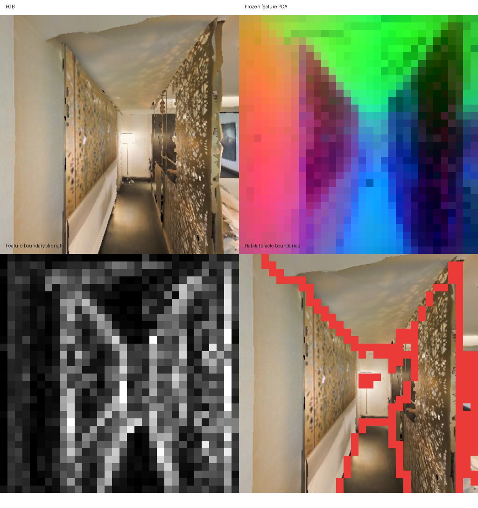
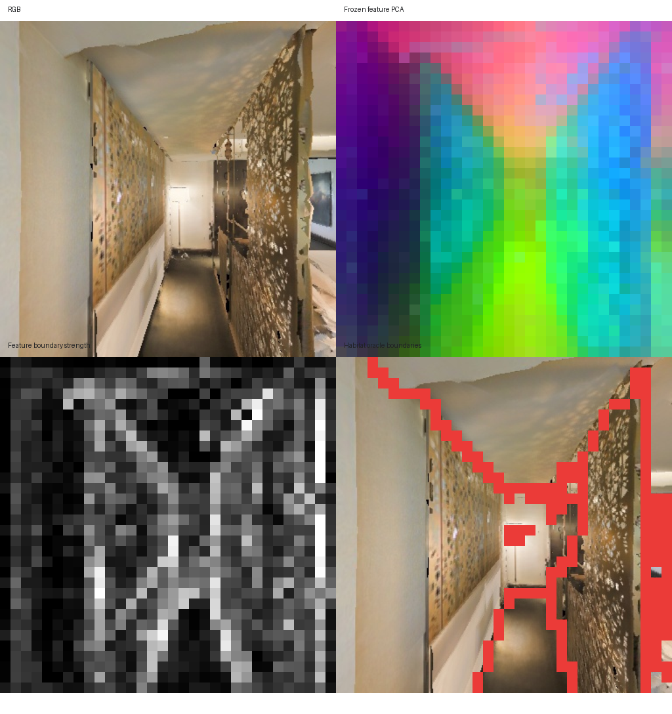
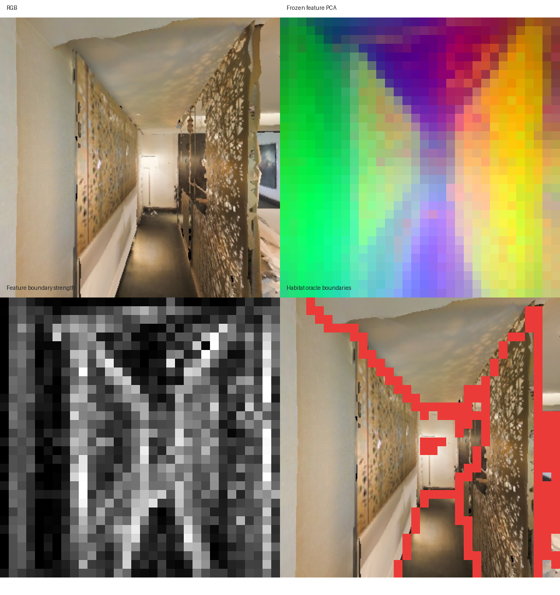
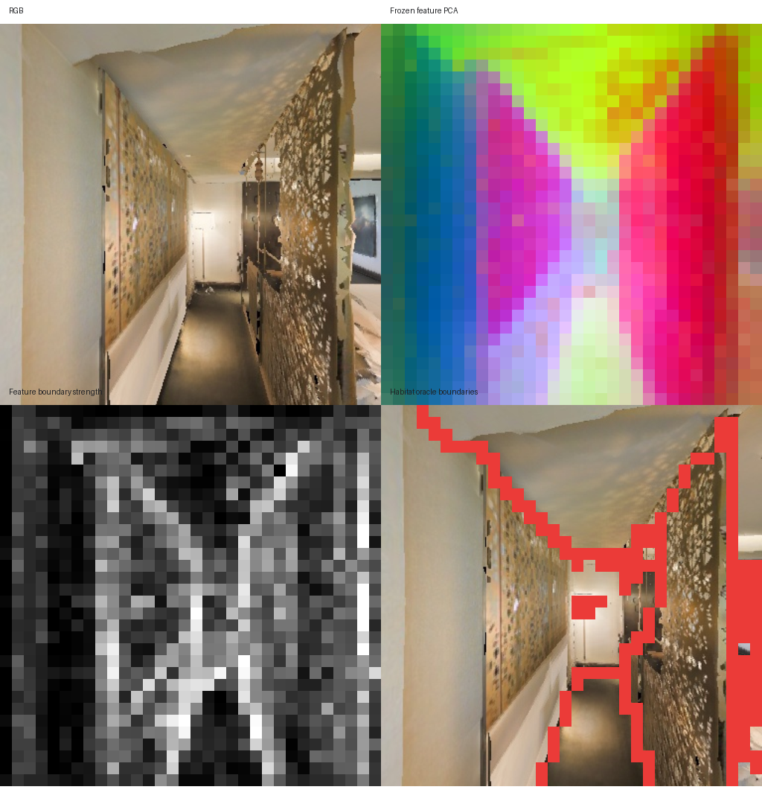

同一批 Habitat RGB，使用 frozen patch token 相邻余弦距离预测 Habitat semantic-instance 边界。 该测试衡量空间边界表征，不等价于开放词汇检测能力；这些权重没有 detector head。
| Variant | Params | Boundary AP | Best F1 | ROC-AUC | Edge contrast | FPS | Peak VRAM |
|---|---|---|---|---|---|---|---|
| small | 21.60M | 0.3835 | 0.4439 | 0.8171 | 0.1086 | 82.59 | 0.07 GB |
| base | 85.67M | 0.3551 | 0.4229 | 0.7970 | 0.1046 | 83.96 | 0.23 GB |
| large | 303.15M | 0.3572 | 0.4310 | 0.8075 | 0.1148 | 48.33 | 0.66 GB |
| giant | 1134.47M | 0.3761 | 0.4387 | 0.8128 | 0.1320 | 29.72 | 2.35 GB |



